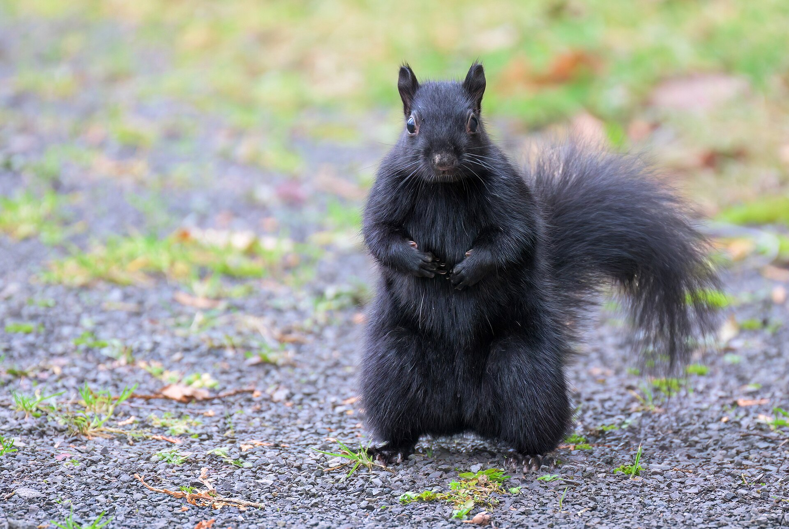

Tompkins County - upstate New York
Squirrel Removal in Ithaca, NY
Ithaca's mix of wooded gorges, Cayuga Lake shoreline and older homes near the woods makes it prime territory for attic wildlife. Between Cornell-area rentals, Fall Creek and East Hill colonials and houses backing onto the gorges, animals are never far from a warm roofline. When raccoons, bats or squirrels move in, humane removal plus proper exclusion is what keeps them out for good.
For Ithaca homeowners the animal in question here is the squirrel: attic work is the core squirrel job: grey squirrels by day, flying squirrels by night, both nesting in insulation above the ceiling. This page combines the squirrel method with Ithaca housing, waterways and pricing, so you can see what the job actually looks like on a home like yours.
Squirrel problems in Ithaca
Gray squirrels are constant around Ithaca's oaks and maples. They chew through fascia boards and gable vents, then nest in wall voids where their gnawing on wiring becomes a genuine fire risk.
The squirrel damage that matters is electrical. In Ithaca, with older homes tucked against wooded hillsides and Cayuga Lake and the gorges close by, that damage clock starts the day the animal moves in, not the day you notice it.

Signs to check for
- Scratching, scampering and rolling sounds in the morning and late afternoon
- Light pitter-patter and thumps after dark in winter, a flying squirrel sign
- Chewed holes at fascia, soffit corners or gable vents, with fresh wood shavings below
Squirrel tracks are rarely the indoor sign. Look instead for chew marks: paired grooves and fresh pale wood at a hole edge about 2 inches across. Grey squirrels run 1 to 1.5 lb with a long bushy tail. Flying squirrels are far smaller, 2 to 5 ounces, with big eyes and a gliding membrane.
Squirrel services in Ithaca
Squirrel in the attic in Ithaca
Attic work is the core squirrel job: grey squirrels by day, flying squirrels by night, both nesting in insulation above the ceiling. Ithaca adds a local wrinkle: older homes tucked against wooded hillsides means older flashing, settled soffits and chimney joints that open a little wider every freeze and thaw. What separates a lasting job from a repeat call is the sealing at the end of it, done at every gap the survey found, not only the obvious one.
Squirrel in the chimney in Ithaca
Squirrels fall into flues and nest on smoke shelves, and a chimney squirrel that cannot climb out becomes an emergency quickly. The Tompkins County pattern is consistent, and Ithaca is no exception: the animal finds the gap in autumn, and the homeowner finds the animal in spring. If the season is wrong for this species, an honest operator says so and books the work for the week the window opens.
Squirrel under the deck, porch or shed in Ithaca
Squirrels do not den under decks often, but they use deck framing and stored items as staging for roof jumps and feeder raids. The Tompkins County pattern is consistent, and Ithaca is no exception: the animal finds the gap in autumn, and the homeowner finds the animal in spring. Ask for the entry list in writing, with photographs, before any work starts. It is the document the whole job should be judged against.
Squirrel babies and young in Ithaca
Two litters a year, December to February and May to June, mean young checks drive the timing of almost every eviction. In Ithaca that plays out against older homes tucked against wooded hillsides, where the original builders never imagined a determined animal with all night to work. The fix follows the same order as everywhere on this site: confirm the animal, check for young, evict, then seal with material that outlasts the animal's patience.
Squirrel damage repair in Ithaca
Squirrel damage repair covers fascia and vent replacement, nest removal, insulation work and the wiring check that flags an electrician visit. The Tompkins County pattern is consistent, and Ithaca is no exception: the animal finds the gap in autumn, and the homeowner finds the animal in spring. If the season is wrong for this species, an honest operator says so and books the work for the week the window opens.
Squirrel emergency call-outs in Ithaca
A squirrel loose in the living space, or fallen into a wall void and scratching to get out, is treated as a same-day problem. Around Cayuga Lake and the gorges, Ithaca homes sit close to the cover and water squirrels travel, so a gap that would stay empty elsewhere gets found here. Ask for the entry list in writing, with photographs, before any work starts. It is the document the whole job should be judged against.
Squirrel dead animal removal in Ithaca
A squirrel that dies in a wall void is located by odour and fly activity, removed through the smallest practical opening, and the void disinfected. The Tompkins County pattern is consistent, and Ithaca is no exception: the animal finds the gap in autumn, and the homeowner finds the animal in spring. What separates a lasting job from a repeat call is the sealing at the end of it, done at every gap the survey found, not only the obvious one.
How squirrel removal works in Ithaca

- Inspect and identify the species. Grey and flying squirrels need different handling, so the inspection identifies which animal, where it enters, and whether young are in the nest.
- Check for young and time the eviction. During litter seasons the nest is checked before any door is fitted.
- Fit one-way doors at the entry points. A one-way door at the main entry lets squirrels out and not back in, while secondary holes are sealed first.
- Seal with chew-proof material and repair. Entries are closed with galvanised steel, metal flashing and hardware cloth, never foam or caulk alone, which squirrels chew through in a night.
Squirrels are regulated game and wildlife in New York, and nuisance removal runs through DEC-licensed operators, who can take problem squirrels in and around buildings under their licence conditions. That framework governs every job in Tompkins County, and it is why the method here is eviction and sealing rather than trap and hope.
What squirrel removal costs in Ithaca
| Service | Typical range | Notes |
|---|---|---|
| Inspection and entry-point survey | $150-$300 | Often credited toward the work when you proceed. |
| Single-animal humane removal | $300-$600 | One animal, one entry point, straightforward access. |
| Bat exclusion, full home | $800-$2,500 | Colony work: one-way valves, full seal, guano check. |
| Attic cleanup and disinfection | Quoted after inspection | Depends on droppings volume and insulation condition. |
Ithaca pricing tracks the wider Finger Lakes market. Homes near the gorges or lake with steep rooflines can sit at the higher end of exclusion ranges because safe access takes longer.
A single grey squirrel eviction with one entry sealed is a standard single-animal job.
Squirrel season in Ithaca
New York squirrel work follows the litters. Winter brings the December to February litter and, for flying squirrels, peak communal denning in attics, so noises at night in January usually mean flyers.
Humid continental; Jan-Feb highs ~31-33F, lows ~15-17F Gorge trails often close in winter for ice/rockfall and reopen Apr-May; Cayuga Lake rarely free
Squirrel removal in Ithaca: questions and answers
How much does squirrel removal cost in Ithaca?
In Ithaca the canonical bands apply: inspection $150 to $300, single-animal removal $300 to $600, bat exclusion $800 to $2,500, and cleanup quoted after inspection. Ithaca pricing tracks the wider Finger Lakes market. Homes near the gorges or lake with steep rooflines can sit at the higher end of exclusion ranges because safe access takes longer. The written estimate after inspection is the number to trust, and it should list removal, sealing and any cleanup as separate lines so you can compare quotes honestly.
There's a squirrel in my home in Ithaca. What should I do right now?
Keep people and pets away from the space, and do not try to corner, grab or seal the animal in yourself. Note where and when you hear or smell it, and check the roofline or the porch from the ground for the gap it is using. Then book an inspection in Ithaca: the first visit confirms the species, checks for young, and maps every entry point before anything is closed.
Will you seal the entry points after squirrel removal in Ithaca, or just remove the animal?
Sealing is included, because removal on its own fails in Tompkins County within a season: the habitat around Cayuga Lake and the gorges keeps supplying animals. Once the space is confirmed empty, each entry is closed with the right material for that spot, steel mesh, flashing, screening or a buried barrier, and the entry list from the inspection is worked through in full, not just the hole the animal was seen using.
How fast can a technician get to my home in Ithaca?
An animal in the living space, a chimney or a wall void in Ithaca is treated as urgent and usually sees a same-day or next-day response. Standard inspections across Tompkins County are normally booked within a few days. Spring is the pinch point, when young are in dens and every operator's board fills, so the earlier in the season you call about a noise, the more timing options the job keeps.
What if there are baby squirrels involved at my Ithaca home?
Then the plan is built around them, and nothing gets sealed until the family is out together. For squirrels, that means a young check first, and where the young cannot move yet, a reunion approach or a short wait until they can. Separating a mother from her young is not done on this site's jobs: it is cruel, and in practical terms she will damage the house trying to get back in.
Do you clean up droppings and damaged insulation after squirrels in Ithaca?
Yes, cleanup is part of the service menu in Ithaca: droppings and nesting material are removed wet with respirator protection, soiled insulation comes out where contamination is heavy, and the area is disinfected before fresh material goes in. Cleanup is quoted after the inspection rather than folded into a flat removal price, because the honest number depends entirely on how long the animals were in residence above your ceiling.
Are the operators who cover Ithaca licensed in New York?
They should be, and you can verify it before work starts. Nuisance work in Tompkins County runs through NYS DEC-licensed operators who carry insurance for roof and attic work. Ask for the licence details, a written estimate with line items, and a method that ends with sealing. This site's standard is licensed operators only, and the verification questions are the same ones we would want asked of anyone we match you with.
When is the best time of year for squirrel work in Ithaca?
Timing follows the species and the Ithaca seasons together. New York squirrel work follows the litters. Locally, homes near Cayuga Lake and the gorges see the first activity, since animals work out from water and cover. The practical rule: noises heard in autumn deserve a call before winter, and anything heard in spring deserves one before the young are mobile and the calendar starts closing options.